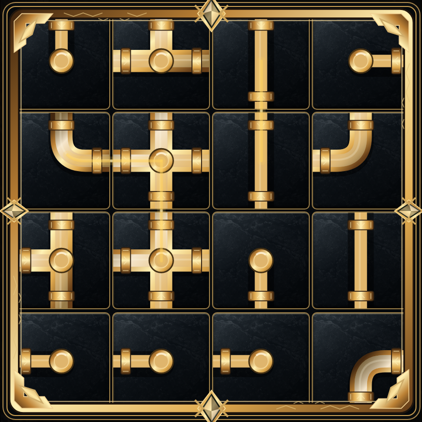
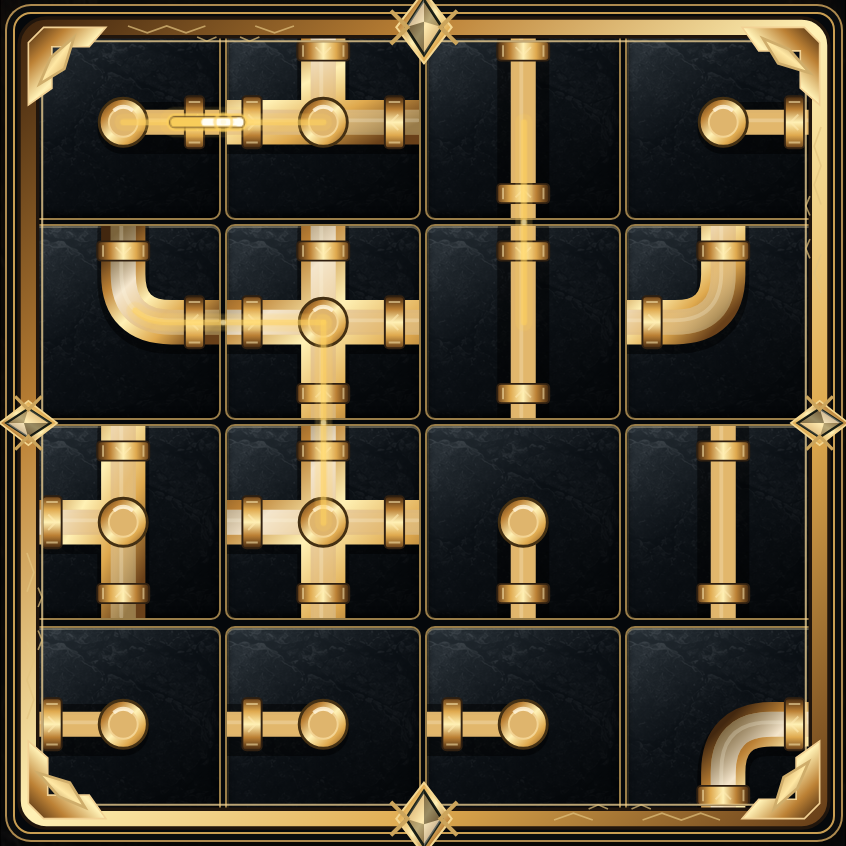
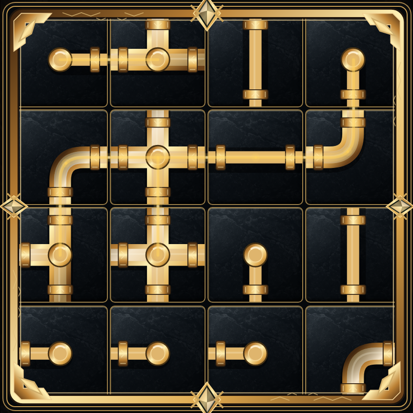
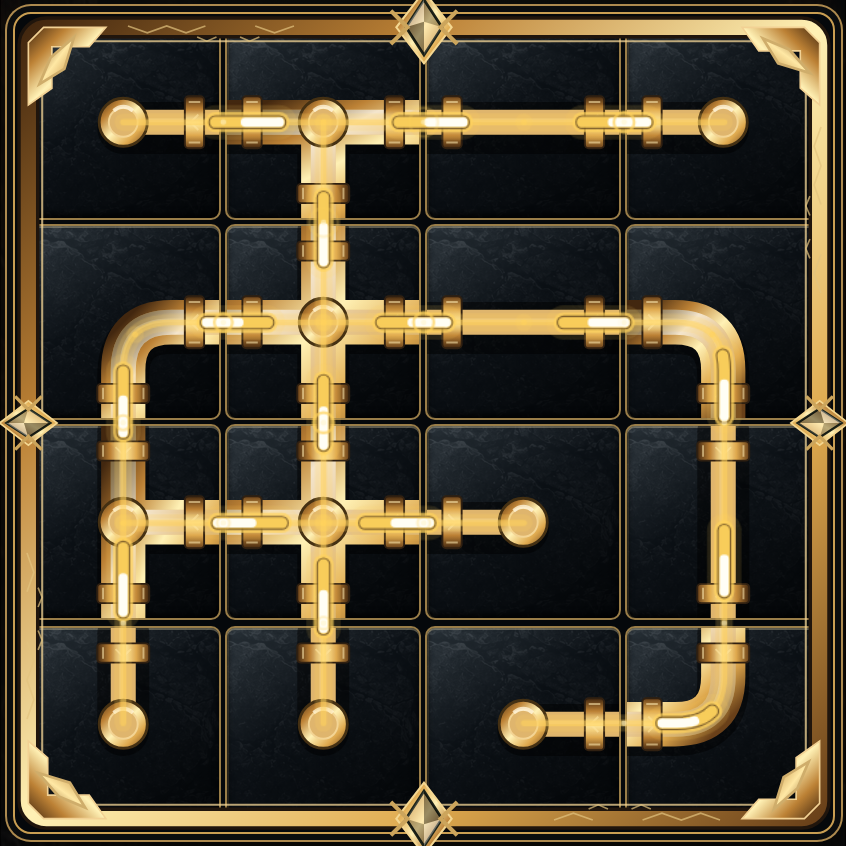

Aynı gerçek bölüm · Düğüm şekilleri, boru geometrisi ve siyah-altın taş yüzey korunuyor.
Gerçek başlangıç tahtası

Hareketli beyaz-altın baş ve kısa bağlantı halkası

Dalga geçtikten sonra kalan hafif aydınlatma

Motorun doğruladığı bağlantılarda sıralı kutlama dalgası
